In microwave circuits described by scattering parameters, it is advantageous to regard noise as noise waves [5]. The noise characteristics of an n-port is then defined completely by one outgoing noise wave 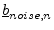 at each port (see 2-port example in fig. 2.1) and the correlation between these noise sources. Therefore, mathematically, you can characterize a noisy n-port by its 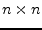 scattering matrix 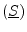 and its noise wave correlation matrix 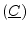.
Where
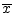 is the time average of  and
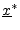
is the conjugate complex of
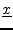. Noise correlation
matrices are hermitian matrices because the following equations hold.
and
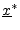
is the conjugate complex of
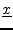. Noise correlation
matrices are hermitian matrices because the following equations hold.
| Im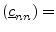 Im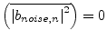 | (2.2) |
| 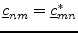 | (2.3) |
Where Im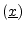 is the imaginary part of and 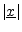 is the magnitude of .